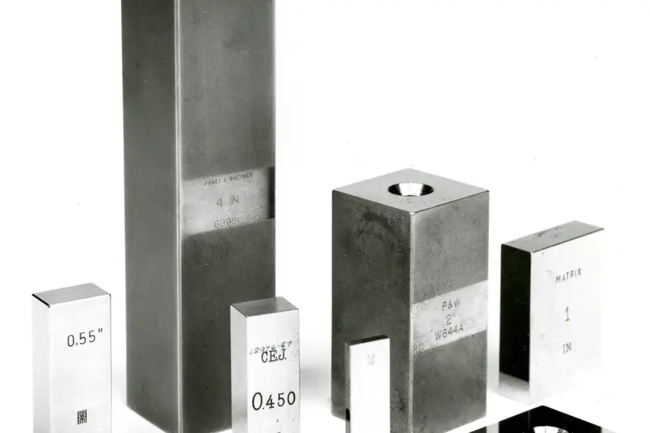

Sample Group/Sample Plant A/Product suite (concept)/Gage Cloud · calibration and IoT gauge tracking
Gauges tracked Sample
1,284
Calipers, micrometers, torque tools, probes
Due in 30 days Sample
37
Auto-scheduled with the calibration lab
Repeatability (s) Real dataset
0.093Ω·cm
Pooled from 6 short-term repeats per run
Largest probe bias Real dataset
-0.027Ω·cm
Probe 2362, mean over 5 wafers
Probe bias study · 5 probes × 5 wafers × 6 days Real dataset
| Component | Std dev (Ω·cm) |
|---|---|
| Repeatability (within day) | 0.0932 |
| Day-to-day | 0.0214 |
| Probe-to-probe | 0.0212 |
Resistivity of 100 Ω·cm silicon wafers measured with five 4-point probes (run 1, 150 records) from NIST/SEMATECH e-Handbook §2.6.1 (US government work). Bias = probe mean − mean of all probes, per wafer; bars show ±1 SD across wafers. Variance components are our method-of-moments computation and may differ slightly from NIST's published analysis. There are no tolerance limits in this study, so no %GRR is shown.
Reference standards


IoT tags (BLE beacons) on tool cases would update “last seen” as tools move between cells. Imagined UI
Gauge registry Sample
| ID | Gauge | Owner | Calibration | Last seen (IoT tag) |
|---|---|---|---|---|
| PRB-0001 | 4-point probe 1 | Gauge lab | Due in 12 d | Lab shelf 2 |
| PRB-0281 | 4-point probe 281 | Gauge lab | Due in 40 d | Lab shelf 2 |
| PRB-2362 | 4-point probe 2362 | Gauge lab | Bias review | Quarantine bin |
| CAL-0417 | Digital caliper 0–150 mm | Line 3 | Due in 3 d | Line 3 · cell 2 |
| TQW-0088 | Torque wrench 20–100 Nm | Line 3 | Overdue 2 d | Last seen Line 5 |
Sample registry. Probe IDs match the NIST study above. DataMyte's EnGagePlus! page lists calibration records, tool-crib check-in/out, due and overdue reports, certificates, and GR&R, bias, stability and linearity studies.
Feature names from DataMyte's public pages: EnGagePlus!. Layout, data and anything marked “Imagined UI” are a concept by chrismai.ai. Figures marked “Estimate” are model-inferred; figures marked “Real dataset” come from cited public data. See Methods · Photo and data credits.